重复任务，连调休都算进去。
每天、每周几、每月第几个周几、每年，或者自定义间隔。下一次可以从到期那天算，也可以从完成那天算。
- 每个法定工作日跳过节假日，调休的周末照常提醒
- 每年农历八月十五按农历算，每年自动换算成公历
- 每月最后一天大月小月都对得上
- 每 3 天，从完成那天算晚做一天，下一次也往后挪
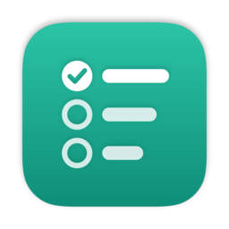
安排好每一天。
为 Mac 原生打造的开源待办清单。
离线就能用，同步服务可以自己部署。
免费。版本 0.1.0，需要 macOS 26 或更新版本。

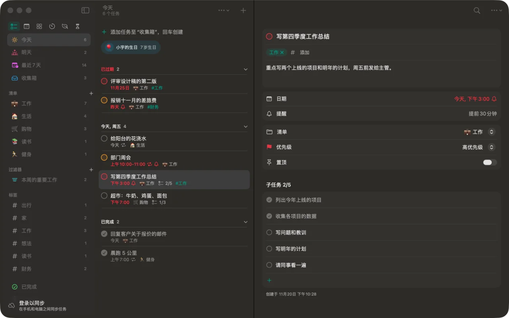
在快速添加里照平常说话那样写。日期、时间、重复、标签和优先级会被认出来，边打边标亮。
月、周、三天、单日、日程，还有多周和全年。拖动任务就改了日期和时间，拉下边缘改时长。农历、节日和法定节假日的休、班都标在上面。
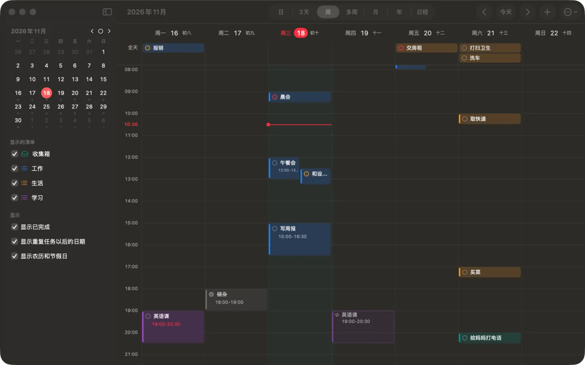
清单里可以分组，拖动排序，拖到别的分组。每个清单都能换成看板或时间线来看。
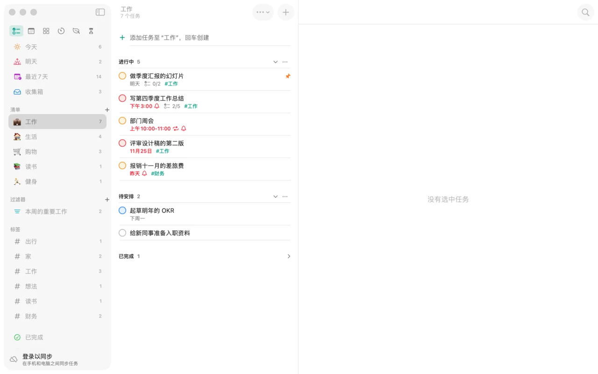
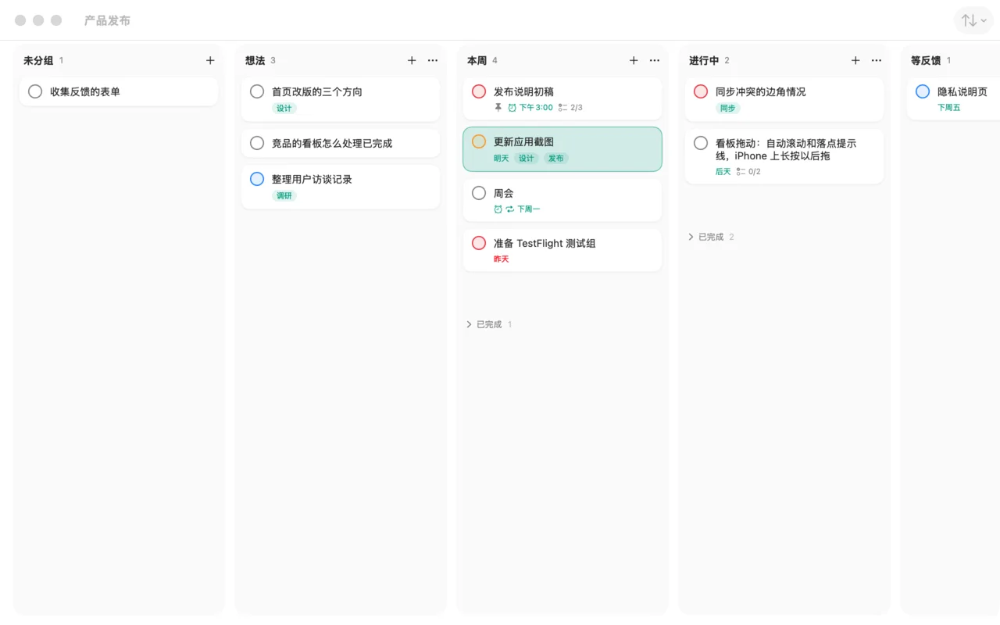
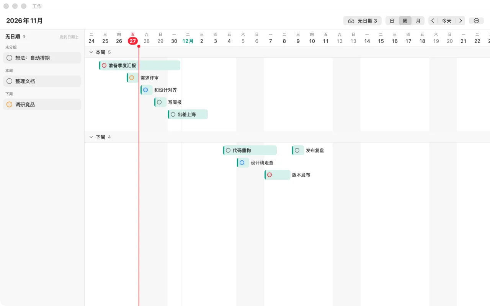
每天、每周几、每月第几个周几、每年，或者自定义间隔。下一次可以从到期那天算，也可以从完成那天算。
“zhoubao”“zb”都能找到“周报”。标题、描述、子任务和标签一起找，命中的地方标黄。
一个任务可以设好几个提醒。应用没开着也会弹出通知，在通知上直接完成或稍后再提醒。
准时提前 15 分钟提前 1 天
⌘ 点选、Shift 连选、⌘A 全选，一起改日期、优先级、清单和标签。删错了可以撤销。
界面大小分小、标准、大、特大四档，所有窗口的文字和图标一起缩放。
按清单、标签、日期、优先级和内容筛选，还能“不包含”“满足任一”。过滤器跟着账号同步。
番茄专注、习惯打卡、倒数纪念日和四象限，和任务放在同一个应用里，用同一个账号同步。
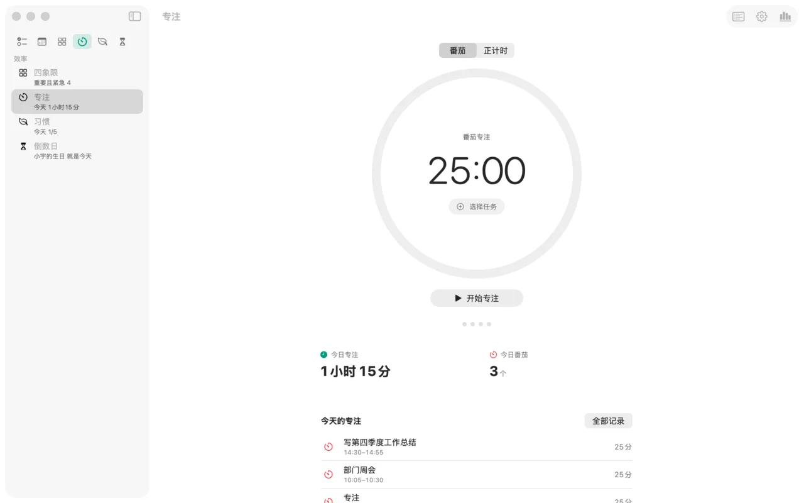
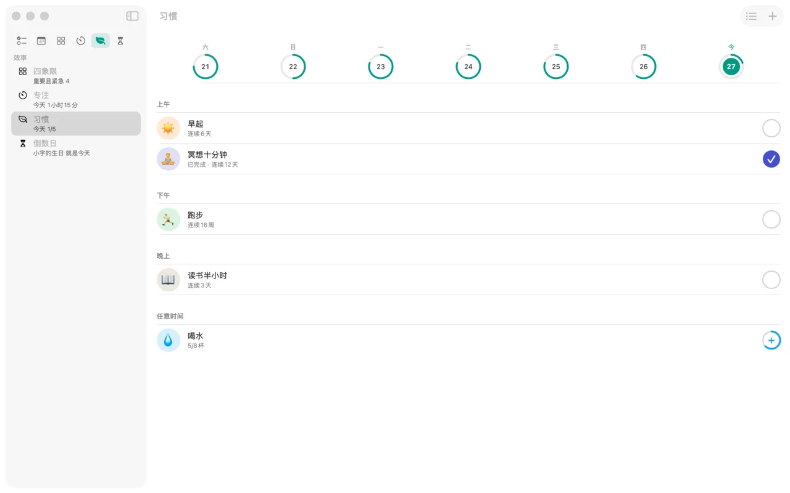
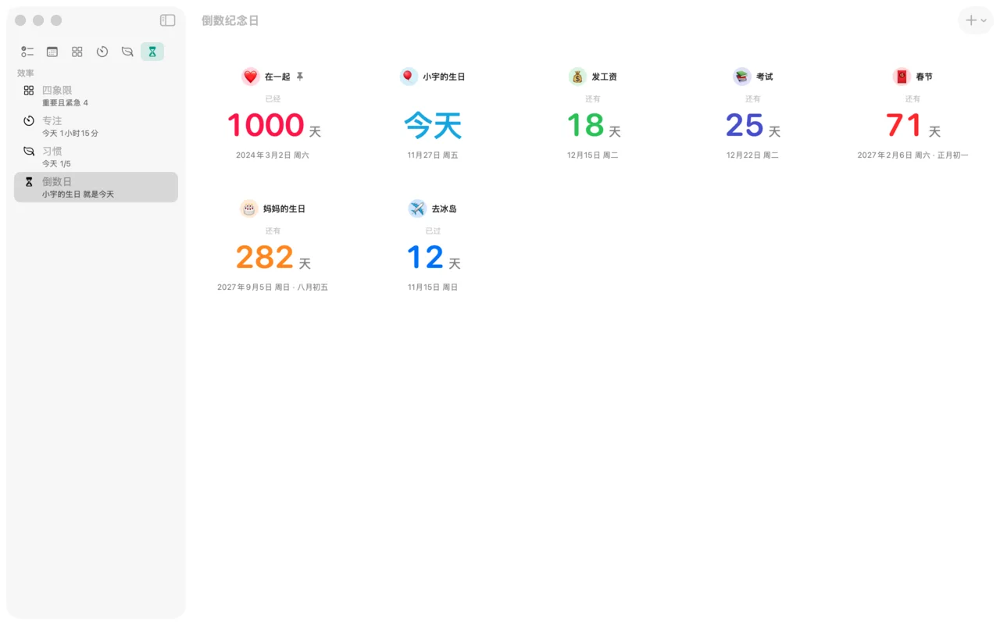
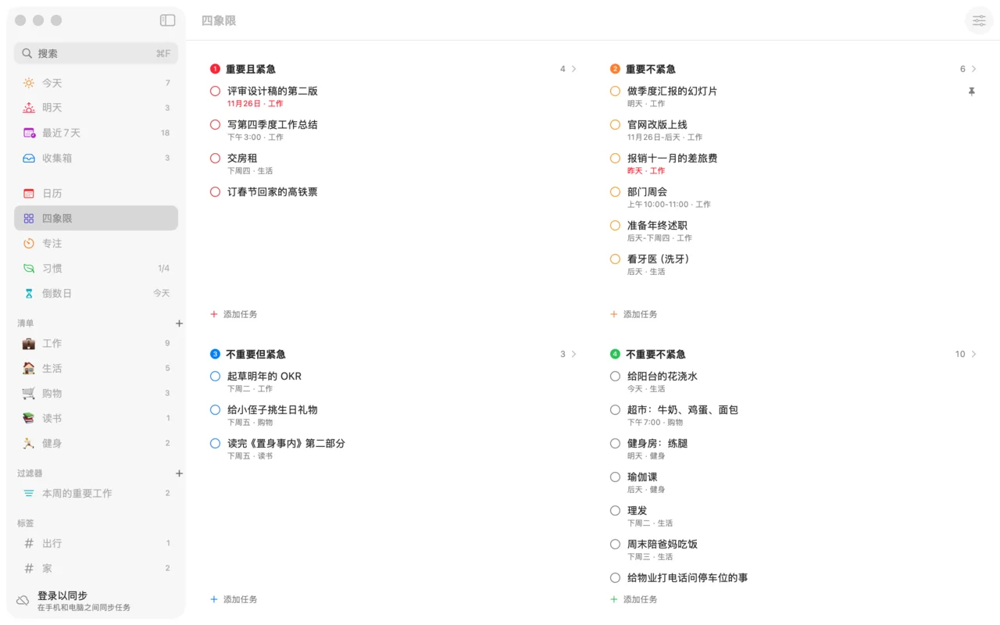
不用先切回 OpenTodo。它住在菜单栏、桌面和系统的各个角落里。
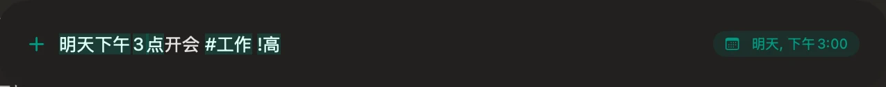
点一下菜单栏，今天要做的事就在眼前。
今天的任务、快速添加、倒数日和习惯。
添加任务、完成任务、打开清单，都能串进自动化。
在别的应用里，把网页和文字分享成任务。
登录同一个账号，Mac 和 iPhone 自动同步。iPhone 和 iPad 版还没有上架，现在可以从源代码自己编译。
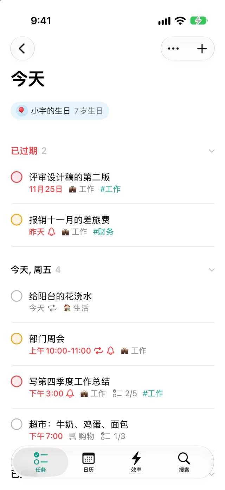
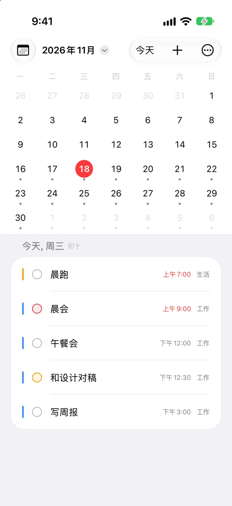
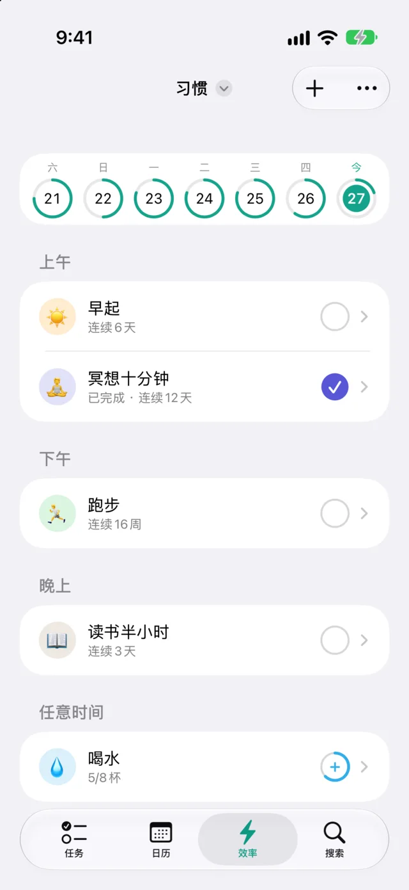
任务存在你的电脑上，没有网络也照常用。联网后自动增量同步，两边都改过的，以较新的修改为准。
同步服务是一个 Go 写的可执行文件，数据存在 SQLite 里。部署在自己的服务器上，登录时填上地址就行；也可以直接用官方的。
客户端和同步服务的代码都在 GitHub 上，按 AGPL-3.0 许可发布。可以自由使用、修改和分发。
免费下载，没有内购，也没有广告。
下载 macOS 版版本 0.1.0，磁盘映像，25 MB
或者用 Homebrew 安装
brew install --cask kadaliao/tap/opentodo